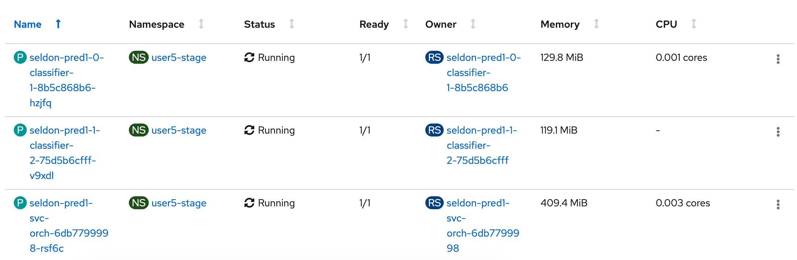
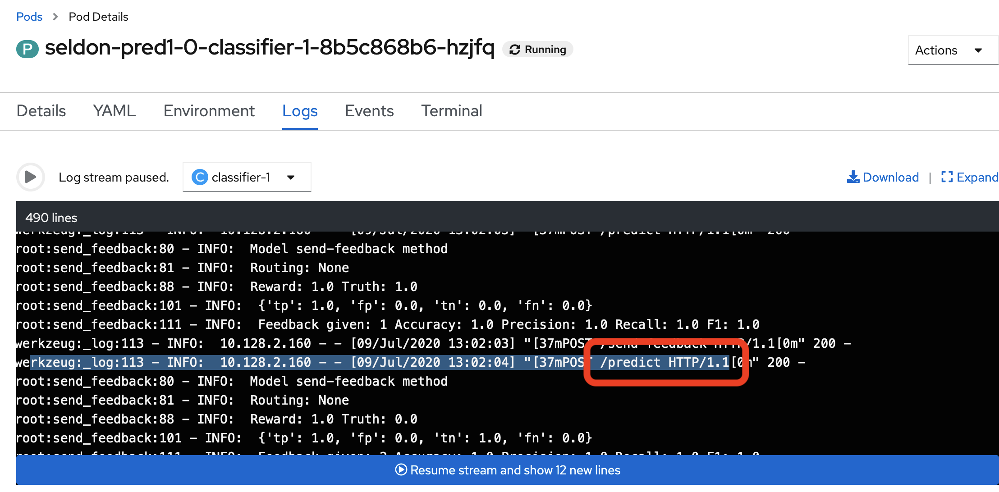

cd /projects/rh-mlops-workshop
git checkout master
cp /projects/rh-mlops-workshop/src/train/boost.ans.py \
/projects/rh-mlops-workshop/src/train/boost.py
cat << EOF > /projects/rh-mlops-workshop/src/train/config.sh
PYTHON_SCRIPT=boost.py
RUN_NAME=xgboost
EOF
/projects/rh-mlops-workshop/src/train/train-dev.sh11 Continuous Training With A/B Testing
Continuous Training With A/B Testing
It is important for us to actively monitor the quality of your model in production. Monitoring allows us to detect performance degradation, thus allowing us to decide whether we should start new experiment iterations or retrain the model with new data.
In this chapter, you will build a new model, test it in staging and deploy it to production with A/B testing.
Exploring The New Model
Go to JupyterHub and launch the notebook rh-mlops-workshop/notebooks/3 using xgboost.ipynb. The new model will be based on XGBoost.
XGBoost is an optimized distributed gradient boosting library designed to be highly efficient, flexible and portable. It implements machine learning algorithms under the Gradient Boosting framework. XGBoost provides a parallel tree boosting (also known as GBDT, GBM) that solves many data science problems in a fast and accurate way.
Build and Test A New Model
We will be using CodeReady Workspaces, and log in using the username and
password you’ve been assigned (e.g. user1/r3dh4t1!):
The model has already been converted for you using jupytext and modified to run in the pipeline.
Run the following script to use the new model:
Run the model:
cat << EOF > /projects/rh-mlops-workshop/src/seldon/config.sh
MODEL_NAME=XGBoostModel
IMAGE_NAME=xgboost
EOF
cd /projects/rh-mlops-workshop/src/seldon/
./app.sh|
Users may notice the |
Now let’s test the model. Open up a new terminal and run the following:
/projects/rh-mlops-workshop/bin/dev-test.sh|
If the new terminal takes too long to launch or the user interface freezes, try refreshing the browser or restarting the workspace. |
The code has been tested and we can now commit to development branch.
cd /projects/rh-mlops-workshop/src/train
git add *.py
git commit -a -m "my xgboost model"
git push -v origin masterThe code has now been pushed to your git repository.
Deploy to Staging With A/B Testing
We will now build the image for staging. Once the code is pushed to the stage branch, the pipeline will run.
cd /projects/rh-mlops-workshop
git checkout stage
git merge master
git push -v origin stageYou can go to OpenShift Console to monitor the pipeline run.
Once the pipeline runs finish, we will modify the SeldonDeployment to do A/B testing in staging.
|
Please ensure that the Pipeline above runs finish before proceeding to the next stage. |
cd /projects/rh-mlops-workshop
git checkout tags/v1.0 -b v1.0
GIT_REV=`git rev-parse --short HEAD`
echo "GIT REVISION: $GIT_REV"
. src/seldon/config.sh
PREV_IMAGE_NAME=$IMAGE_NAME
PREV_GIT_REV=$GIT_REV
git checkout stage
GIT_REV=`git rev-parse --short HEAD`
. src/seldon/config.sh
cd /projects/rh-mlops-model-deploy
git checkout master
sed -e "s/_USER_/user1/g" \
-e "s/_CONTAINER_REGISTRY_/$NEXUS_DOCKER_REGISTRY/g" \
-e "s/_PREV_IMAGE_NAME_/$PREV_IMAGE_NAME/g" \
-e "s/_PREV_GIT_REV_/$PREV_GIT_REV/g" \
-e "s/_IMAGE_NAME_/$IMAGE_NAME/g" \
-e "s/_GIT_REV_/$GIT_REV/g" \
seldon-model-ab.yaml.tmpl > seldon.yaml
git commit -a -m "a/b testing with $PREV_IMAGE_NAME:$PREV_GIT_REV and $IMAGE_NAME:$GIT_REV"
git checkout stage
git merge master
git push -v originYou can login to Argo CD with your user1/r3dh4t1! credential to monitor the deployment.
There will be 2 classifier pods deployed in your user1-stage project.

After the new model has been deployed to OpenShift, you can now run some basic tests
/projects/rh-mlops-workshop/bin/stage-test.shNow go to OpenShift Console to view the pod logs. Observe that credit card transactions have been sent to both pods by calling the /predict endpoints.

Deploy To Production With A/B Testing
We will now promote this new image to the Production environment and run some tests.
cd /projects/rh-mlops-model-deploy
git checkout prod
git merge stage
git push -u -v originAfter the new model has been deployed to OpenShift, you can run some basic tests.
/projects/rh-mlops-workshop/bin/prod-mon-test.sh